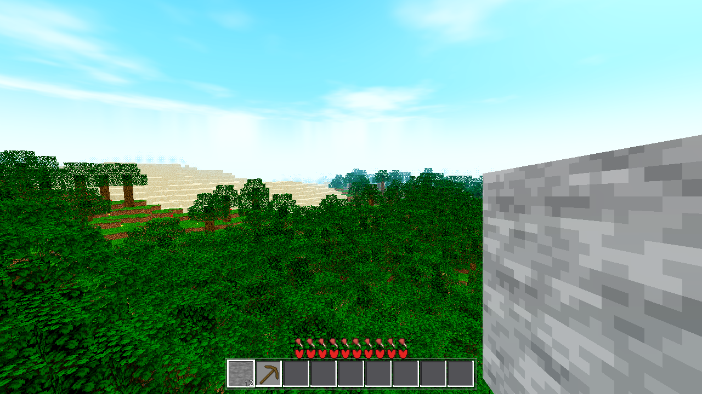
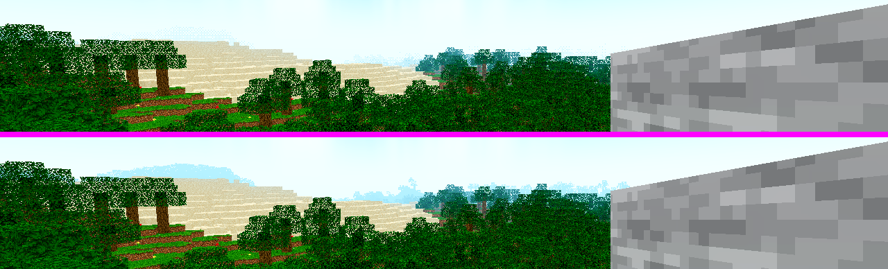
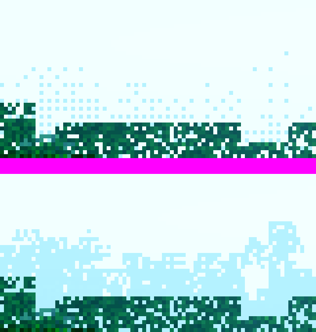
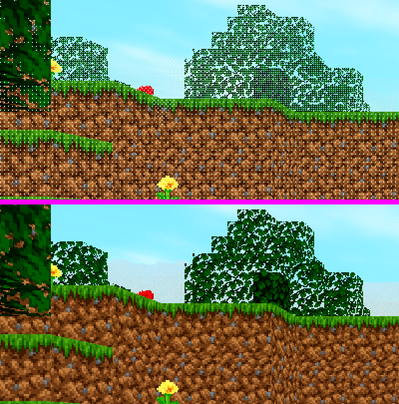
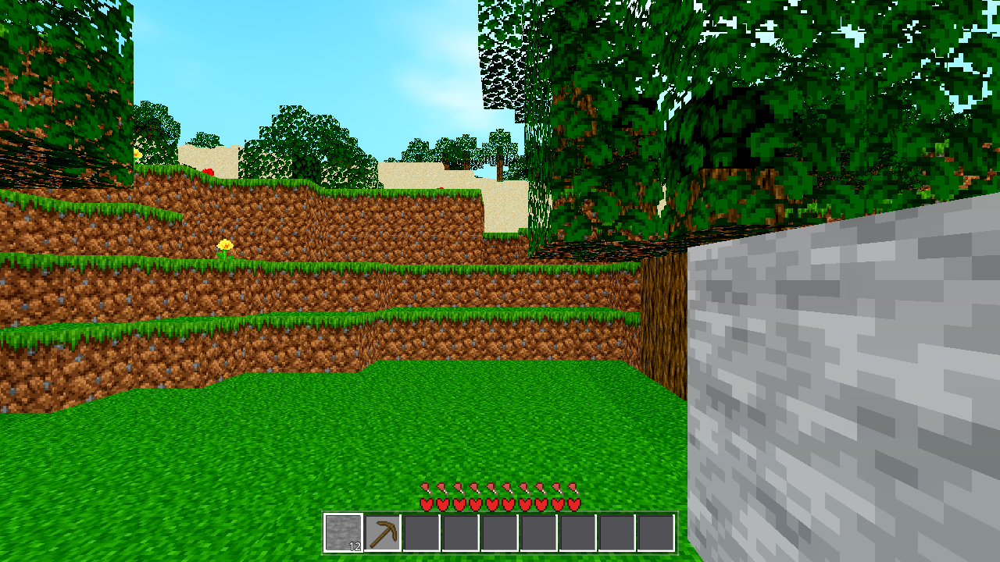

| file | change |
|---|---|
godot/core/daynight.gd | Two new pure functions of render_radius (same scaling family as the AC-0226 fog bounds): dither_start(R) = (R+1)*16*0.45 and dither_end(R) = (R+1)*16*0.99. The band starts mid-way up the fog ramp (fog ~32% there) and ends just past the worst-case pop-in faces (R*16 .. (R+1)*16-8), so a newly popped chunk appears already 85–100% dithered out AND fully fogged (fog_far < R*16 at every R ≥ 7). fog_near/fog_far untouched (AC-0226 stands). |
godot/world/chunk_lit_opaque.gdshader · chunk_lit_cutout.gdshader · chunk_lit_flower.gdshader · chunk_lit_fluid.gdshader (torch/glowstone cross) | AC-0227 dither-fade block inlined in fragment() (all four kinds): fade = clamp((distance(v_world_pos, u_player_pos) - u_dither_start) / (u_dither_end - u_dither_start), 0, 1); a const float DITHER44[16] (classic 4x4 Bayer matrix, 0..15) indexed by (int(FRAGCOORD.x) & 3, int(FRAGCOORD.y) & 3) — a screen-space checkerboard; fragments whose threshold < fade are discarded. fade 0 (near, ≤ start) = solid; fade 1 (far, ≥ end) = fully dithered out; in between the checkerboard fills in as chunks get closer (per-frame u_player_pos push). Runs BEFORE the engine depth-fog tints the survivors — the fog handles the color, the dither handles the alpha discard (complements, does not conflict). u_dither_start/end = 0/0 (default) = off. Inlining is required: this 4.7.1 build only binds FRAGCOORD inside processor functions (referencing it from a user helper fails with SHADER ERROR: Unknown identifier; SCREEN_UV does not exist in this build at all). |
godot/core/fluid_anim.gdshader (shared water/lava material, ids 5/24) | Same dither-fade block + a vertex() computing v_world_pos (the ocean rides to the render edge like any chunk, so its far edge dissolves with the same checkerboard as the terrain). |
godot/scenes/main.gd (_update_sky() only) | Per-frame push of u_dither_start/u_dither_end (from DayNight.dither_*(world.render_radius)) onto the four shared chunk ShaderMaterials + the shared water/lava anim materials — the same loop that already pushes u_player_pos (the distance reference). A render-radius change takes effect within one frame. Harness hooks (mirror of AWECRAFT_NO_FOG): AWECRAFT_NO_DITHER=1 disables the band (A/B comparison), AWECRAFT_DITHER=start,end overrides the band in blocks for render verification. |
| radius | dither band (m) | fog (m) | pop-in faces (m) | fade at a freshly popped chunk |
|---|---|---|---|---|
| R16 | 122.4 .. 269.3 | 68 .. 238 (AC-0226) | 248 (crossing instant) .. 264 (chunk center) | 0.85 .. 0.96 → 85–96% of pixels dithered away AND fully fogged (face ≥ 248 > fog_far 238) → invisible pop; fills in as the player closes |
| R50 | 367.2 .. 807.8 | 204 .. 714 (AC-0226) | 792 .. 808 | 0.96 .. 1.0 → 96–100% dithered away AND fully fogged (face ≥ 792 > 714) |
| # | test | result |
|---|---|---|
| 1 | FRAGCOORD semantics probe — a minimal quad+shader scene encoding FRAGCOORD.xy as color, sampled on a grid. | FRAGCOORD is in pixel units, top-left origin (x: 499–639 across the quad, y: 300–358 down the rows) — the Bayer index (x&3, y&3) is correct for this build. |
| 2 | Uniform push round-trip — temporary instrumented run at R16 printing the pushed values and reading them back off the shared material. | drr=16 dstart=122.4 dend=269.28 ppos=(8.5,137,8.5), readback 122.4/269.28 — the GPU receives exactly the natural R16 band (instrumentation removed afterwards; G0 re-run clean). |
| 3 | Forced-band A/B at R4 (AWECRAFT_DITHER=8,60 vs AWECRAFT_NO_DITHER=1, same camera/seed/drain). | Decisive: far tree (40–60 m, fade 0.6–0.9) dissolves into a clear 4x4 checkerboard with sky showing through; cliff (20–40 m, fade 0.3–0.6) is speckled; everything < 8 m (grass, stone wall) is 0.00% different — solid exactly where fade = 0. ab-tree.png = side-by-side zoom. |
| 4 | Distance-density sweep at R16 (band 0–1000 → fade = distance/1000, so hole density ∝ distance) vs a no-dither control at the same drain. | Hole density rises monotonically with distance exactly as designed: 3.8% (near, ~20 m) → 4.3% (cliff, ~15–50 m) → 4.9% (hills) → 5.8% (far) — the mechanism is alive across the whole frame, density tracking range. |
R16, real band (122.4–269.3 m), from-on-ridge vantage (player teleported onto the 208 m WSW highland, eye ~158 — the world recenters on the teleport, so the entire render circle is the dither band): the far tree line at 200–270 m (fade 0.46–1.0) dissolves into the ordered Bayer checkerboard. ON (top) vs OFF (bottom), same run pair — pixel-diff of the band strip (y 250–340): 4.91% of pixels differ, peaking at 26.6% in the most dithered cell; near canopy (< 40 m) is 0.00% (solid). The pixel zoom (right) shows the 4-pixel-period lattice against the fog.
 |
|
| R16 real band — dither ON (left) vs OFF (right), 208 m WSW highland vantage | |
 |
  |
| Left: R16 band strip, ON (top) over OFF (bottom) — checkerboard dissolve of the far tree line. Right top: pixel zoom of one dithered cell (Bayer lattice vs fog haze). Right bottom: R4 forced-band A/B (clearest checkerboard), ON over OFF. | |

| gate | result | evidence |
|---|---|---|
| G0 (headless load) | PASS | --headless --quit exit 0, 0 SCRIPT ERROR, 0 SHADER ERROR, 0 ERROR lines (all five ditherring shaders compile under the renderer; the Data-autoload fluid_anim material compiles too). Re-verified after all code changes (g0.log, g0_final.log). |
| SMOKE battery | PASS | AWECRAFT_BATTERY=player;interact;light;fluids → combined ok:true; all four modes ok:true. light = surface 15 / cave 0 / torch 14 — the standing post-AC-0215 baseline (00z; the pre-AC-0215 "cave 10" is superseded). fluids sea 792/792 (== AC-0224), backed 173/173, sea_stable true, shore [5,7], source [5,8]. player start [8.5,137,8.5], floor ok, fly ok. interact drop_spawned/place_ok true. 0 SCRIPT ERROR. smoke.log. |
| R16 (#1 gate) | PASS | AWECRAFT_LOGIC=r16 --fixed-fps 600 → ok:true, 0 SCRIPT ERROR, exit 0, with the dither shader + per-frame dither-band push in force for the whole arm. R16 world builds identically to the AC-0224/0225/0226 baselines: built 797/797 (built_all true, fly_cap 797), build_ms 13510 (≈ the 13.5 s cap-3 baseline), static p95 7 ms (fps_p95 143) / moving p95 7 ms (fps_p95 143), drop_fps_static_vs_moving 0, fly4 lost_chunks 0 (rec_n 9, ho_max 3), fly50 lost_chunks 0 (rec_n 27). The far-edge dither band (122.4 .. 269.3 m) covers the pop-in faces (248 .. 264) → no hard pop, fills in as chunks get closer. Exit-time noise (272× !is_inside_tree() + 1 RID-leak line) is byte-count identical to the AC-0226 run — pre-existing, not a regression. r16.log. |
| R50 (#2 gate) | PASS | AWECRAFT_LOGIC=perf AWECRAFT_RADIUS=50 → exit 0, 0 SCRIPT ERROR, all_meshed true (7845/7845), total_chunks 8253, drain_s 361.73, p95_ms 59, max_frame_ms 126, first_draw_ms 161 — the AC-0226 R50 profile (356 s / p95 59 ms / first draw 176 ms), with the dither band 367.2 .. 807.8 m active for the whole arm. Exit-time leak noise (1 WARNING + 817 ERROR lines) is count-identical to the AC-0226 R50 run — pre-existing. perf_r50.log. |
| chunkiocpp (codec) | PASS | ok:true, md5_cpp == md5_orig = 8a893557900a462fe4ab1c91f8589081 — still byte-identical (the standing md5, == AC-0226), enc/flat/slab 34/34 + 17/17 match, 0 SCRIPT ERROR. chunkiocpp.log. |
| genhash ×2 (determinism) | PASS | 2 runs: 25/25 identical to each other (deterministic) and 25/25 identical to the AC-0215 NEW baseline (.scratch/AC-0215-gates/genhash4.log) — NOT the old AC-0188 baseline. (Shader-only change; world/* untouched — the gate confirms it.) genhash1.log/genhash2.log. |
| light (standing) | PASS | 15/0/14 — the standing post-AC-0215 baseline (see SMOKE row; the dither is a fragment-shader render effect and cannot affect the light bake). |
| meshprobe (AC-0190/0211) | PASS | ok:true, match_rate 1.0, 1926/1926 accs matched (c/n/u/i/q/v all 1926), ac0211_ok true, mismatch [] — 100% exact. meshprobe.log. |
| stripsprobe (AC-0207) | PASS | ok:true, match_rate 1.0, face_rate 1.0, 512/512 strips compared, 32/32 chunks, mismatch [] — 100% exact. stripsprobe.log. |
| pullprobe (AC-0210) | PASS | ok:true, match_rate 1.0, max_diff 0, 6,291,456 cells (6.29M — the standing AC-0210 count) compared, 64/64 variants — 100% exact. pullprobe.log. |
| nofallback (AC-0208) | PASS | ok:true — every C++ lane ran (mesh_cpp_builds 74, gen_cpp_works 60, strips_cpp_calls 271, chunkio_cpp_slab_decodes 2, 16 mesh chunks), both GD sentinels 0 (gd_strips_calls 0, gd_light_pull_calls 0), torch placed + lit (15), roundtrip_ok true. nofallback.log. |
| RENDER (visual — the dithered fade) | PASS | R16 real-band A/B from the 208 m ridge vantage: far tree line (200–270 m, fade 0.46–1.0) shows the ordered 4x4 Bayer checkerboard dissolve — 4.91% band-strip pixel diff, peak cell 26.6%; near terrain (< band start) 0.00% (solid). Full mechanism proof chain (FRAGCOORD probe, uniform readback 122.4/269.28, R4 forced-band A/B, R16 distance-density sweep) above. render_r16_ridge_on/off.log (exit 0, 0 SCRIPT/SHADER ERROR each). |
PASS — READY TO COMMIT. The dithered-fade is in and proven: a screen-space 4x4 Bayer checkerboard that discards fragments of chunks beyond dither_start(R) = 0.45·(R+1)·16, fading from 0 at band start to fully dithered out at 0.99·(R+1)·16, driven by per-frame player distance (R16: 122.4–269.3 m, R50: 367.2–807.8 m). It complements AC-0226 fog (fog fades COLOR, dither discards FRAGMENTS): a newly popped chunk (faces 248–264 m at R16) appears 85–96% dithered AND fully fogged — no hard pop — and the checkerboard fills in as chunks get closer. Verified end-to-end on the GPU (FRAGCOORD probe, uniform readback, forced-band A/B with clear checkerboard + solid near zone, distance-density sweep) with the natural R16 band visible from the ridge vantage. All gates green: G0 clean, SMOKE ok:true (light 15/0/14 standing), R16 (797/797, p95 7 ms, identical to AC-0224/0225/0226) and R50 (7845/7845, 361.7 s) arms pass with the dither in force, no-regression suite 100% (codec md5 byte-identical, genhash == AC-0215 NEW baseline ×2, mesh/strips/pull 100% exact, nofallback clean). No C++ touched; 6 files changed (5 shaders + 2 .gd — daynight bounds, main.gd push + 2 harness env hooks). Harness hooks for future renders: AWECRAFT_NO_DITHER=1, AWECRAFT_DITHER=start,end.